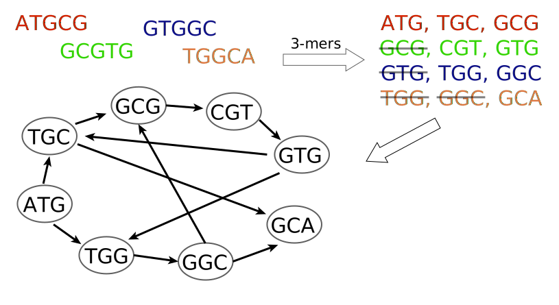

Acknowledgement
Sebastian Schmeier
http://genomics.sschmeier.com
Overview
- Learning objectives
- DNA sequence assembly problem
- The greedy puzzle
- Graph-based genome assembly
- Seven bridges of Königsberg
- We construct a de Bruijn graph
- Underlying assumptions of graph-based genome assemblies
- Summary
Learning objectives
- Be able to explain the DNA sequence assembly problem
- Be able to list the assumptions underlying a genome assembly
- Be able discuss how the assumptions relate to reality
- Be able to describe the principles of the greedy algorithm
- Be able to describe the principles underlying a graph-based genome assembly
DNA sequence assembly problem
- The most commonly used DNA sequencing technology uses
random fragmentation and sequencing of short reads < 300nt
- This results in millions of short sequences
- Genome assembly involves joining overlapping short sequence
fragments together into long pieces to recover a continuous sequence of the genome
How to do this efficiently?
The greedy puzzle
ATGCG
GCGTG
TGGCA
GTGGC
Assumptions:
- If two sequence reads share a common overlapping substring of letters,
then it is because they are likely to have originated from the same chromosomal regions in the genome
Objective :
Find a final string
“genome” such that:
- all reads are substrings of “genome”
- “genome” should be as short as possible
ATGCG
GCGTG
TGGCA
GTGGC
⇨
ATGCG
GCGTG
Greedy algorithm (find a solution incrementally):
- Pick the highest scoring overlap.
- Merge the two overlapping fragments and add the resulting new sequence to the pool of sequences.
- Repeat until no more merges can be carried out.
Objective :
Find a final string
“genome” such that:
- all reads are substrings of “genome”
- “genome” should be as short as possible
Greedy algorithm (find a solution incrementally):
- Pick the highest scoring overlap.
- Merge the two overlapping fragments and add the resulting new sequence to the pool of sequences.
- Repeat until no more merges can be carried out.
Objective :
Find a final string
“genome” such that:
- all reads are substrings of “genome”
- “genome” should be as short as possible
ATGCG
| GCGTG
| GTGGC
| TGGCA
| |
ATGCGTGGCA
genome
Greedy algorithm (find a solution incrementally):
- Pick the highest scoring overlap.
- Merge the two overlapping fragments and add the resulting new sequence to the pool of sequences.
- Repeat until no more merges can be carried out.
Greedy algorithms are not a good solution :
⇨
ATGCG
| GCGTG
| GTGGC
| TGGCA
| |
ATGCGTGGCA
genome
Assumptions:
- Reads are 100% accurate
- Identical reads must come from the same location on the genome
- All substrings from the genome are represented in the set of sequenced reads
But none of them hold true
Graph theory
Represent relationships between entities
Graph theory
Analyse connections e.g. find well–connected hubs in graphs
Graph theory
Directed graph e.g. information flow
Graph-based genome assembly

Preprocess the sequence reads to determine the pair-wise overlap information and represent these binary relationships
Graph-based genome assembly

Preprocess the sequence reads to determine the pair-wise overlap information and represent these binary relationships
Graph-based genome assembly

- Preprocess the sequence reads to determine the pair-wise overlap information
and represent these binary relationships
- The problem of finding a consistent lay-out (i.e. genome)
can then be formulated in terms of searching a paths in the graph satisfying certain criteria
Assumption: All substrings are represented
- Even modern sequencers that generate 150nt+ reads do not cover all possible 150-mers present in the genome
- Thus, people generally use substrings of certain length k (k-mers)
→ Here we use 3-mers by cutting the original reads into reads of length 3

- Each k-mer is a vertex
- Draw edge from x to y, where
- suffix from x overlaps prefix from y
- Each k-mer is a vertex
- Draw edge from x to y, where
- suffix from x overlaps prefix from y

- Each k-mer is a vertex
- Draw edge from x to y, where
- suffix from x overlaps prefix from y

- Each k-mer is a vertex
- Draw edge from x to y, where
- suffix from x overlaps prefix from y

- Find Hamiltonian path, that is, a path that visits every vertex exactly once
- Record the First letter of each vertex + All letters of last vertex
- Find Hamiltonian path, that is, a path that visits every vertex exactly once
- Record the First letter of each vertex + All letters of last vertex
UNFORTUNATELY:
→ The Hamiltonian path problem is very difficult to solve (NP-complete)
- Find Hamiltonian path, that is, a path that visits every vertex exactly once
- Record the First letter of each vertex + All letters of last vertex
UNFORTUNATELY:
→ The Hamiltonian path problem is very difficult to solve (NP-complete)
Seven bridges of Königsberg
- In 1735 Leonhard Euler was presented with the following problem:
- Find a walk through the city that would cross each bridge once and only once
- He proved that a such a walk does not exist for Königsberg
- Computationally finding an Eulerian path is much easier than an Hamiltonian
→ we need to reformulate our assembly problem